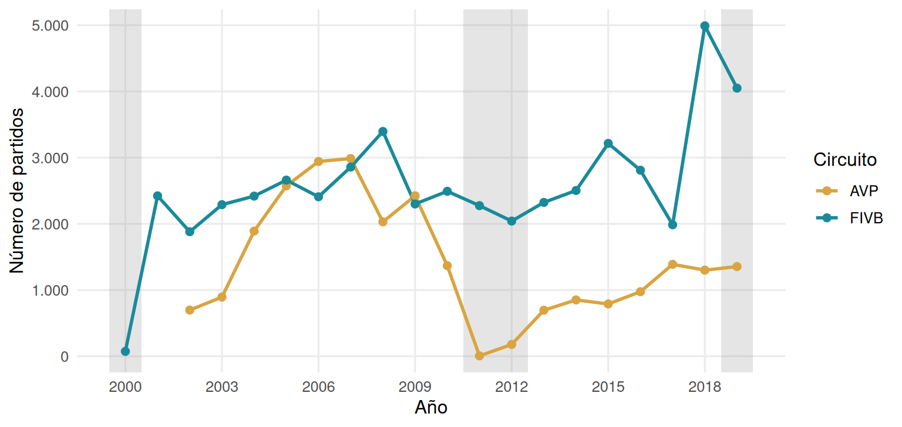
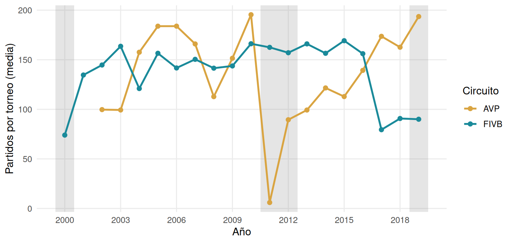
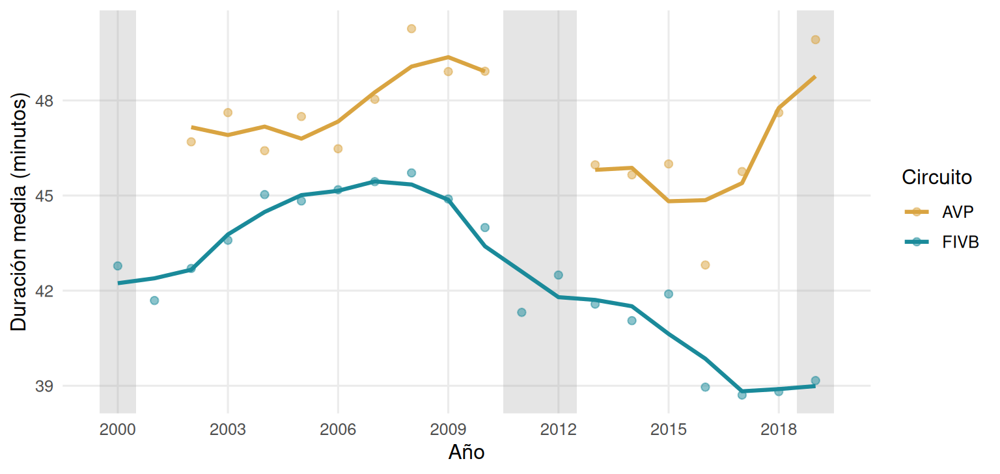
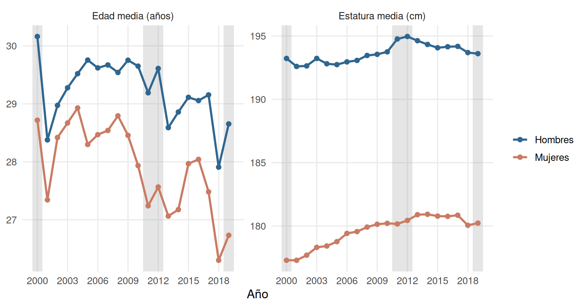
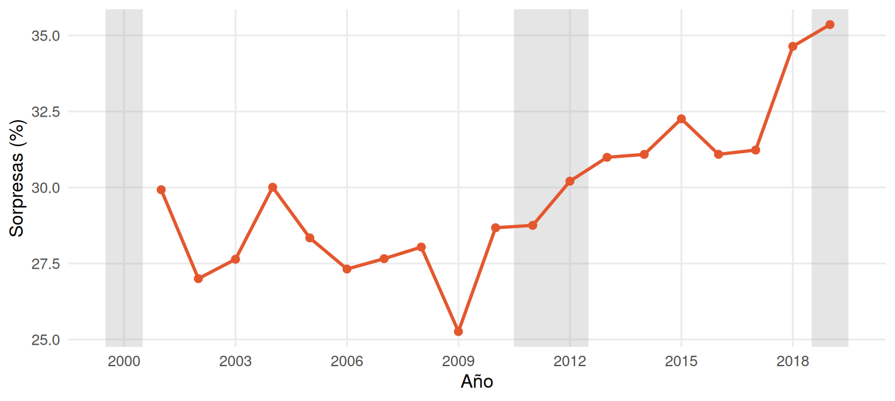

Capítulo 7 Análisis temporal
Este capítulo mira cómo cambian en el tiempo la cobertura del archivo, la duración de los partidos, la edad y la estatura de los jugadores y la tasa de sorpresas. Es un análisis descriptivo: cada serie tiene un valor por año y la tendencia se resume con la prueba de Mann-Kendall, sin modelos de series de tiempo.
Tres años quedan marcados en gris en todos los gráficos porque su cobertura es incompleta: 2000 (muy pocos partidos, todos de la FIVB), 2011–2012 (la AVP casi desaparece, como se vio en el capítulo 4) y 2019. Esos años se excluyen de las pruebas de tendencia: 2000 y 2019 en todas las series, y 2011–2012 en las series que incluyen a la AVP.
7.1 Partidos por año y por torneo
ggplot(pa, aes(year, valor, color = circuit)) +
bandas +
geom_line(linewidth = 1) + geom_point(size = 2) +
scale_color_manual(values = col_circ) +
scale_x_continuous(breaks = seq(2000, 2019, 3)) +
scale_y_continuous(labels = function(x) fmt(x)) +
labs(x = "Año", y = "Número de partidos", color = "Circuito")
Figura 7.1: Partidos por año y circuito. Las bandas grises marcan los años de cobertura incompleta (2000, 2011–2012 y 2019).
El número de partidos por año de la FIVB tiene una tendencia sin tendencia clara y el de la AVP, sin tendencia clara (Tabla 7.1).
ggplot(ptn, aes(year, valor, color = circuit)) +
bandas +
geom_line(linewidth = 1) + geom_point(size = 2) +
scale_color_manual(values = col_circ) +
scale_x_continuous(breaks = seq(2000, 2019, 3)) +
labs(x = "Año", y = "Partidos por torneo (media)", color = "Circuito")
Figura 7.2: Partidos por torneo (promedio por año y circuito). Las bandas grises marcan los años de cobertura incompleta.
Los partidos por torneo tienen una tendencia sin tendencia clara en la FIVB y sin tendencia clara en la AVP. Un torneo es cada combinación de nombre, año y evento (capítulo 5).
7.2 Duración de los partidos
dur_mm <- dur %>% select(circuit, year, valor) %>%
complete(circuit, year = 2000:2019) %>%
group_by(circuit) %>% arrange(year) %>% mutate(mm = mm3(valor)) %>% ungroup()
ggplot(dur_mm, aes(year, color = circuit)) +
bandas +
geom_point(aes(y = valor), size = 1.8, alpha = .5) +
geom_line(aes(y = mm), linewidth = 1.1, na.rm = TRUE) +
scale_color_manual(values = col_circ) +
scale_x_continuous(breaks = seq(2000, 2019, 3)) +
labs(x = "Año", y = "Duración media (minutos)", color = "Circuito")
Figura 7.3: Duración media de los partidos por año y circuito (puntos) y media móvil de 3 años (línea).
La duración media tiene una tendencia decreciente en la FIVB (pendiente de -0,33 minutos por año) y sin tendencia clara en la AVP (-0,07 minutos por año). La media móvil suaviza las oscilaciones de un año a otro, pero no es un modelo.
7.3 Edad y estatura de los jugadores
bind_rows(ed, es) %>%
mutate(fam = ifelse(fam == "Edad", "Edad media (años)", "Estatura media (cm)")) %>%
ggplot(aes(year, valor, color = gender)) +
bandas +
geom_line(linewidth = 1) + geom_point(size = 1.8) +
scale_color_manual(values = col_gen) +
scale_x_continuous(breaks = seq(2000, 2019, 3)) +
facet_wrap(~fam, scales = "free_y") +
labs(x = "Año", y = NULL, color = NULL)
Figura 7.4: Edad y estatura medias de los jugadores por año y género. Las bandas grises marcan los años de cobertura incompleta.
La edad media tiene una tendencia sin tendencia clara en los hombres y decreciente en las mujeres. La estatura media es creciente en los hombres y creciente en las mujeres.
7.4 Tasa de sorpresas
Se llama sorpresa al partido que gana la pareja peor rankeada (capítulo 6). Solo se muestran los años con al menos 200 partidos con ranking numérico en ambas parejas.
ggplot(so, aes(year, valor)) +
bandas +
geom_line(color = "#E4572E", linewidth = 1) +
geom_point(color = "#E4572E", size = 2) +
scale_x_continuous(breaks = seq(2000, 2019, 3)) +
labs(x = "Año", y = "Sorpresas (%)")
Figura 7.5: Tasa de sorpresas por año. Las bandas grises marcan los años de cobertura incompleta.
La tasa de sorpresas tiene una tendencia creciente (tau = 0,57; pendiente de 0,32 puntos porcentuales por año).
7.5 Tendencias: prueba de Mann-Kendall
La prueba de Mann-Kendall mide si una serie tiende a subir o a bajar con los años, sin suponer que la tendencia sea una recta. Se resume con el tau de Kendall, que va de −1 (siempre baja) a 1 (siempre sube), y con su valor p. La pendiente es la de Theil-Sen, la mediana de las pendientes entre todos los pares de años, que resiste los valores extremos. La tabla reúne las 11 series; las pruebas no se corrigen por hacer varias a la vez y cada serie tiene pocos años, así que se leen como descripciones del periodo, no como pruebas definitivas.
mk_tab %>%
transmute(Serie = serie, `Años usados` = anios, `tau de Kendall` = tau, p = fp7(p),
Pendiente = pend, `Unidad (por año)` = unidad, Tendencia = tend) %>%
tabla(caption = "Prueba de Mann-Kendall y pendiente de Theil-Sen para las 11 series (se excluyen los años de cobertura incompleta).", digits = 3)| Serie | Años usados | tau de Kendall | p | Pendiente | Unidad (por año) | Tendencia |
|---|---|---|---|---|---|---|
| Partidos por año, AVP | 15 | -0,124 | 0,520 | -38,615 | partidos | sin tendencia clara |
| Partidos por año, FIVB | 18 | 0,176 | 0,306 | 20,750 | partidos | sin tendencia clara |
| Partidos por torneo, AVP | 15 | 0,105 | 0,586 | 1,127 | partidos | sin tendencia clara |
| Partidos por torneo, FIVB | 18 | 0,085 | 0,622 | 0,681 | partidos | sin tendencia clara |
| Duración media, AVP | 15 | -0,219 | 0,255 | -0,065 | min | sin tendencia clara |
| Duración media, FIVB | 18 | -0,451 | 0,009 | -0,334 | min | decreciente |
| Edad media, hombres | 16 | -0,117 | 0,528 | -0,024 | años | sin tendencia clara |
| Edad media, mujeres | 16 | -0,383 | 0,038 | -0,068 | años | decreciente |
| Estatura media, hombres | 16 | 0,700 | < 0,001 | 0,103 | cm | creciente |
| Estatura media, mujeres | 16 | 0,767 | < 0,001 | 0,208 | cm | creciente |
| Tasa de sorpresas | 16 | 0,567 | 0,002 | 0,315 | p. p. | creciente |
Para el entrenador
- La tasa de sorpresas tiene una tendencia creciente en el periodo: no dé por hecho que el ranking de hoy anticipa tanto como el de hace unos años sin mirar esa tendencia.
- La duración media de los partidos tiene una tendencia decreciente en la FIVB y sin tendencia clara en la AVP: sirve para dimensionar la carga física de un partido típico.
- Son tendencias descriptivas del circuito profesional. Los años 2000, 2011–2012 (AVP) y 2019 tienen cobertura incompleta y no entran en las pruebas.